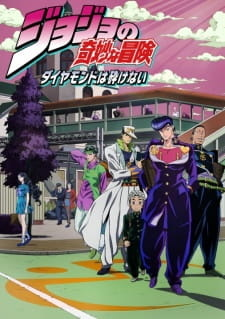

Тип: TV Сериал
Эпизоды: 39
Длительность эпизода: 24 мин.
Дата выпуска: 2016 г.
Жанры: Экшен Приключения Комедия Сверхъестественное Драма Сёнен
Рейтинг: R-17
Лицензировано:
Лицензировано в РФ под названием: Невероятные приключения ДжоДжо: Крестоносцы звёздной пыли
По-японски: ジョジョの奇妙な冒険 ダイヤモンドは砕けない
По-английски: JoJo's Bizarre Adventure: Diamond is Unbreakable

Несокрушимый алмаз/Diamond Is Unbreakable
Информация
Описание
Прибрежный городок Морио до поры до времени был тихим и ничем не примечательным, пока однажды там не появился древний артефакт «Лук и стрела», способный пробуждать в людях скрытые способности, также называемые «стендами». Это породило волну необычных и необычайных событий, среди которых особо выделяются исчезновения молодых девушек.
Однако никто не поднимает шум, и убийце живётся весьма вольготно, пока однажды в Морио не прибывает молодой океанолог Джотаро Куджо. И теперь загадочному маньяку предстоит противостоять ему, а также Джоскэ Хигашикате, несокрушимому, как алмаз.
Однако никто не поднимает шум, и убийце живётся весьма вольготно, пока однажды в Морио не прибывает молодой океанолог Джотаро Куджо. И теперь загадочному маньяку предстоит противостоять ему, а также Джоскэ Хигашикате, несокрушимому, как алмаз.
Персонажи
Манга
Саундтрек
Смотреть